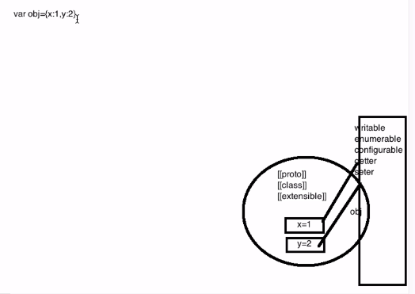
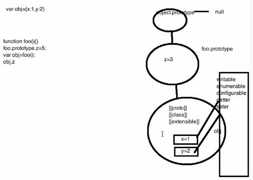
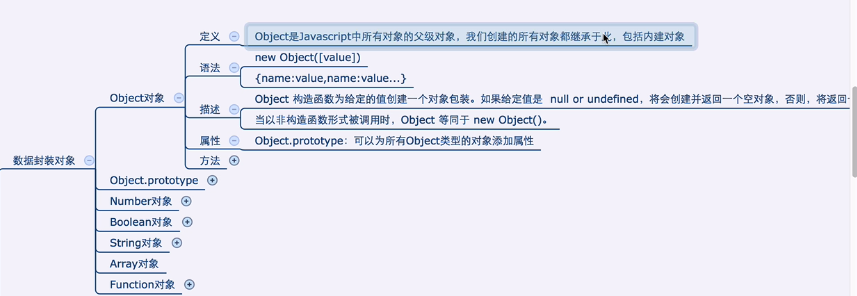

<!DOCTYPE html>
<html lang="en">
<head>
    <meta charset="UTF-8">
    <title>Object's Structure</title>
</head>
<script type="text/javascript" src="../../DebugUtils.js"></script>
<body>
<script>
  enhance('js为对象的每个属性创建了5+属性特性, 为对象自己创建了三个对象特性');
  p('');
  sep();
  enhance('在对象的原型上创建个属性，在调用对象.来访问对象属性时，如果在对象中找不到，就会去对象的原型中找，在对象的原型中找不到，就再去对象的原型的原型中找，直到null');
  enhance('同样的，方法也是符合原型链的');
  p('');
  enhance('每个对象都是从原型继承来的属性');
  enhance('object.prototype没有原型。它的原型是null');
  sep();

  function Foo(){};
  Foo.prototype.z = 3;
  var obj = new Foo();
  obj.x = 1;
  obj.y = 3;
  p('obj.x: ' + obj.x);
  p('obj的原型z值->obj.z: ' + obj.z);
  p('obj.toString(): ' + obj.toString());
  enhance('给obj.z赋值');
  obj.z = 12;
  p('obj.z: ' + obj.z);
  p('');

  sep();

  enhance('通过in检测对象是否有某个属性，包括继承下来的属性');
  p('x' in obj); // true
  p('z' in obj); // true
  p('toString' in obj); // true
  enhance('通过hasOwnProperty检测某个对象是否有这个属性，不包含继承的属性');
  p('x' in obj); // true
  p(obj.hasOwnProperty('toString')); // false

  sep();

  enhance('基于原型对象，来创建一个新对象');
  enhance('Object.create()的第一个参数，就是要创建的对象的原型对象');
  p('var obj2 = Object.create({x: 1});');
  p('');
  var obj2 = Object.create({x: 1});
  obj2.y = 2;
  p('x' in obj2); // true
  p(obj2.hasOwnProperty('x')); // false
  sep();
  enhance('var obj3 = Object.create(null); 创建null对象');
  var obj3 = Object.create(null);


</script>
</body>
</html>